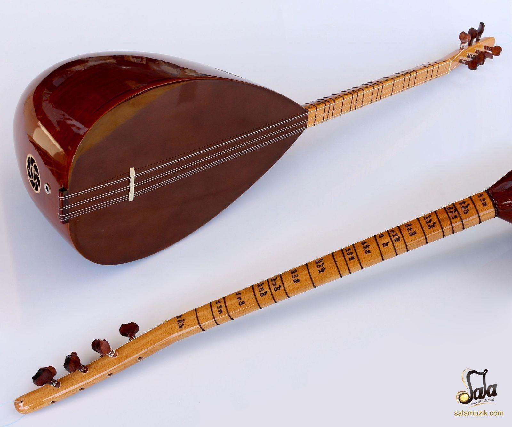

ANA SAYIFA
ENSTRÜMANLAR
HAKKIMIZDA
MÜZİK ENSTÜRMANLAR DÜNYASI

Saz adıyla da bilinen bağlama, Türk Halk Müziğinde en çok kullanılan müzik aletlerinin başında gelir. Yedi telli bir çalgı olan bağlamanın en küçüğüne çöğür denir. Tambura ve cura gibi türleri de bulunan bağlama Arabesk ve Fantezi müziğinde de kullanılır.

Perdeli yaylı çalgılardan biri olan gitar, hem ülkemizde hem de dünya genelinde en çok kullanılan enstrümanlardan biridir. Sadece caz müziği için özel olarak üretmiş gitarın dışında, bas, elektro ve lap steel türünde de gitarlar mevcuttur.

Pianoforte adıyla da bilinen piyan, 18. yüzyılın ilk çeyreğinde icat edildi. Önceleri sadece oda müziğinde kullanılan piyano, günümüzde, caz ve blues olmak üzere birçok farklı müzik türünde de kullanılmaktadır. Toplam 88 tuştan oluşan bu enstrümanlar üç türe ayrılır: 1- Kuyruklu piyano 2- Duvar piyanosu 3- Dijital piyano

Yaklaşık olarak 7 bin yıllık bir geçmişe sahip olan ney, en eski üflemeli çalgılardan biridir. Tasavvuf müziğinde önemli bir yere sahip olan ney, uzunluklarına ve karar perdesine göre birçok türe ayrılır. En çok kullanılan ney çeşitleri şu şekilde sıralanabilir: 1- Davud Ney 2- Süpürde Ney 3- Kız Mahsur Mabeyni

Rock ve metal müzik türlerinde kullanılan bateri, en büyük vurmalı çalgılardan biridir. Zil ve davullardan oluşan bateri, baget adı verilen çubuklarla çalınır.

Ney ile birlikte en eski nefesli çalgılardan biri olan zurna, genellikle ceviz ve söğüt ağacından yapılır. Genellikle Türk halk müziğinde kullanılan zurnanın, çeşitli yörelere ve şehirlere özgü birçok çeşidi bulunuyor.

Darbuka, elle çalınan ritmik bir vurmalı çalgıdır.

Çello ve viyolonsel olmak üzere birçok çeşidi bulunan keman, dört telli bir çalgıdır. Keman, genellikle klasik müzikte ve senfonilerde kullanılır.